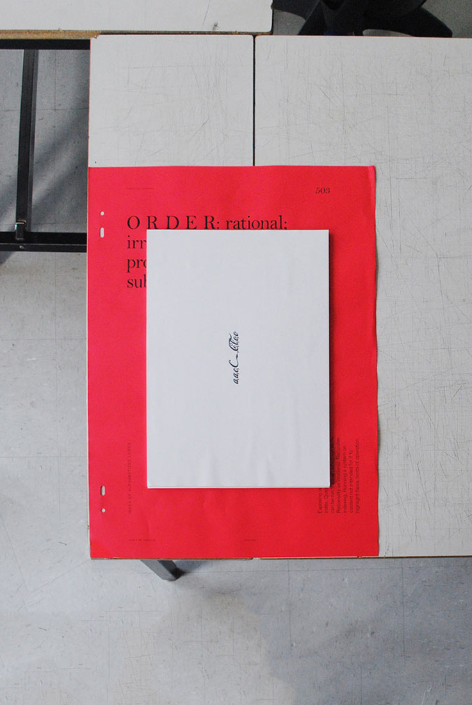
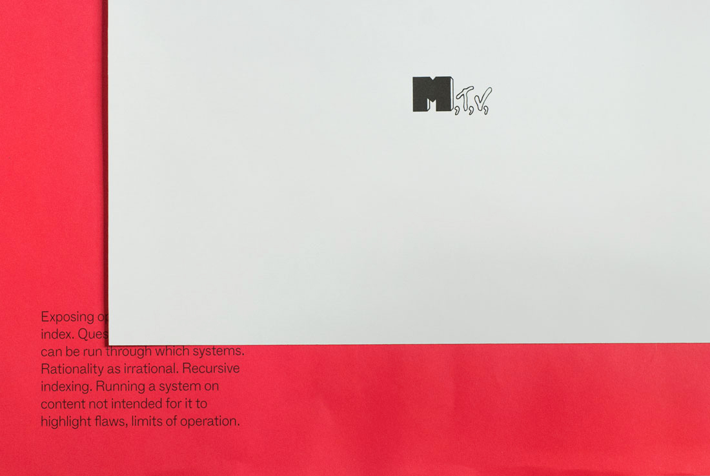

Traces of Absent Things— An Installation of Nine Works
Degree Project
2015
Traces of Absent Things is my semester-long investigation of the index as form and language, noun and verb, score and semiotic sign (a signifier that points back to an absent source). The final project took the form of an installation of nine works (3 objects, 6 books) and a takeaway booklet containing a brief essay I wrote on the topic.

